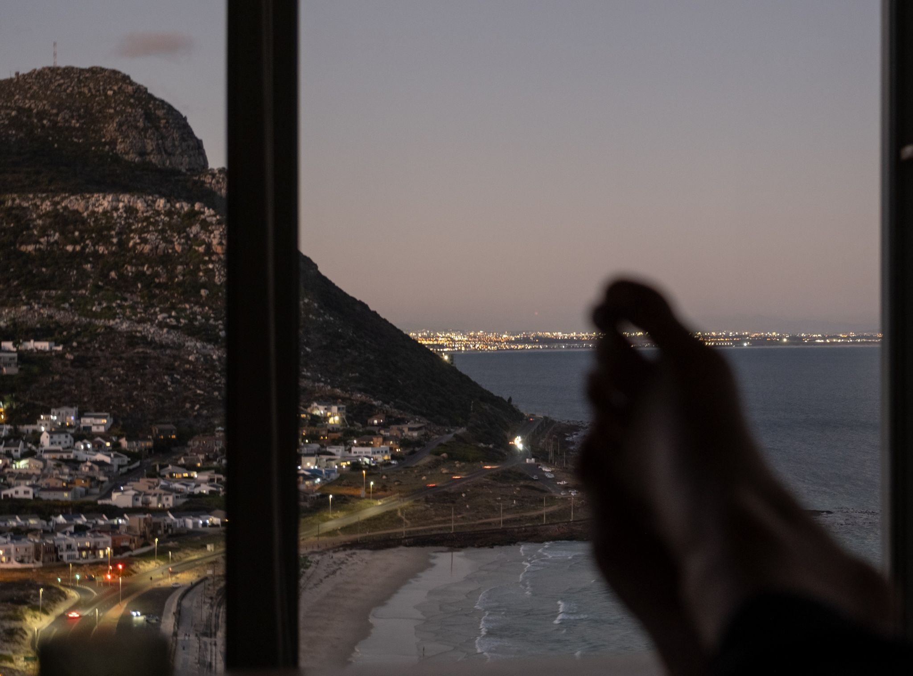
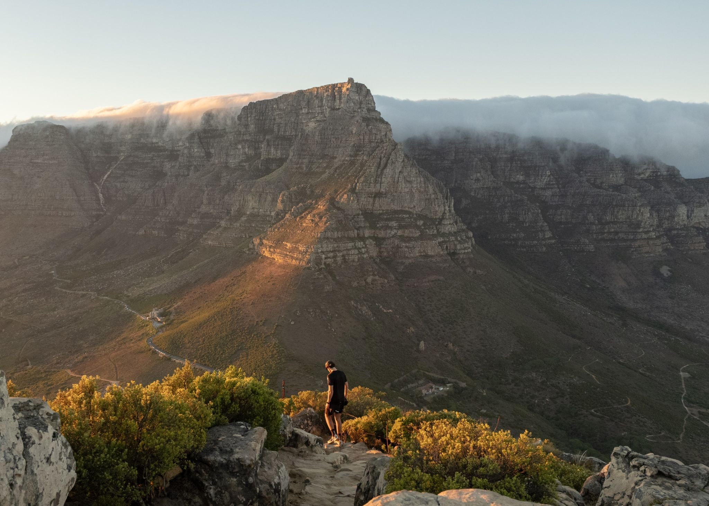
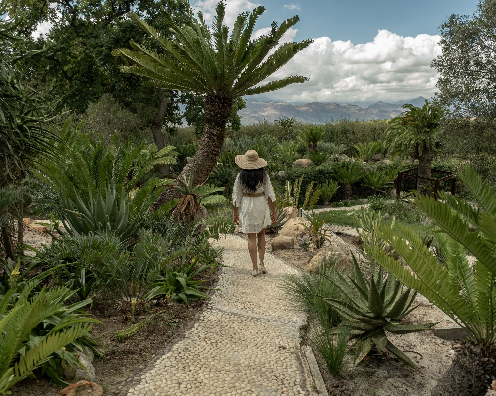
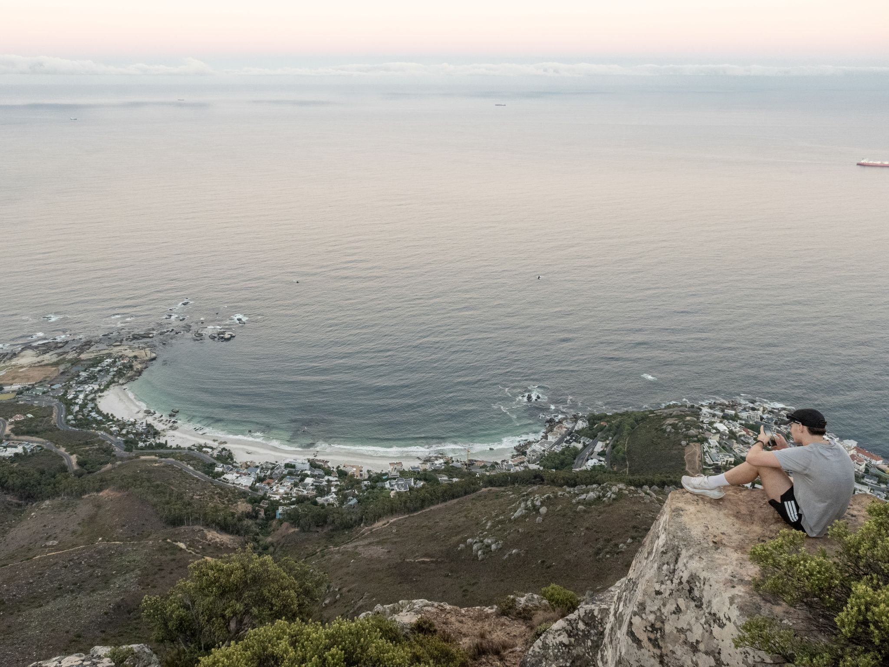
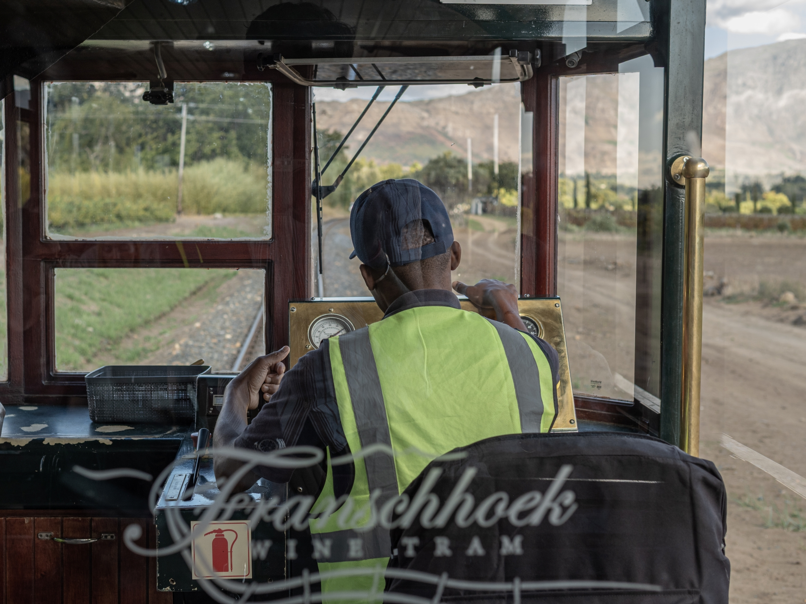
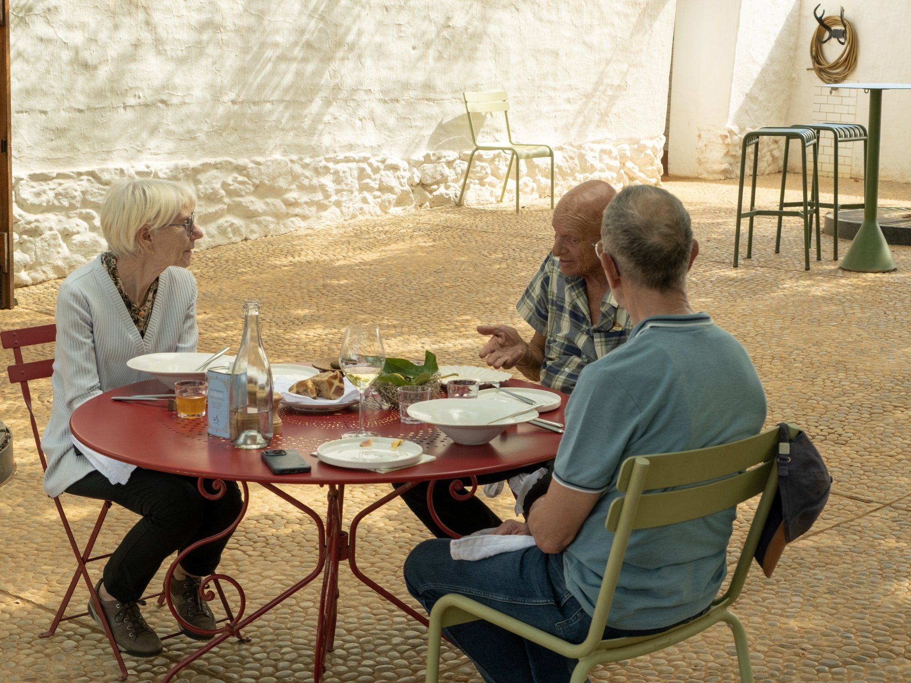
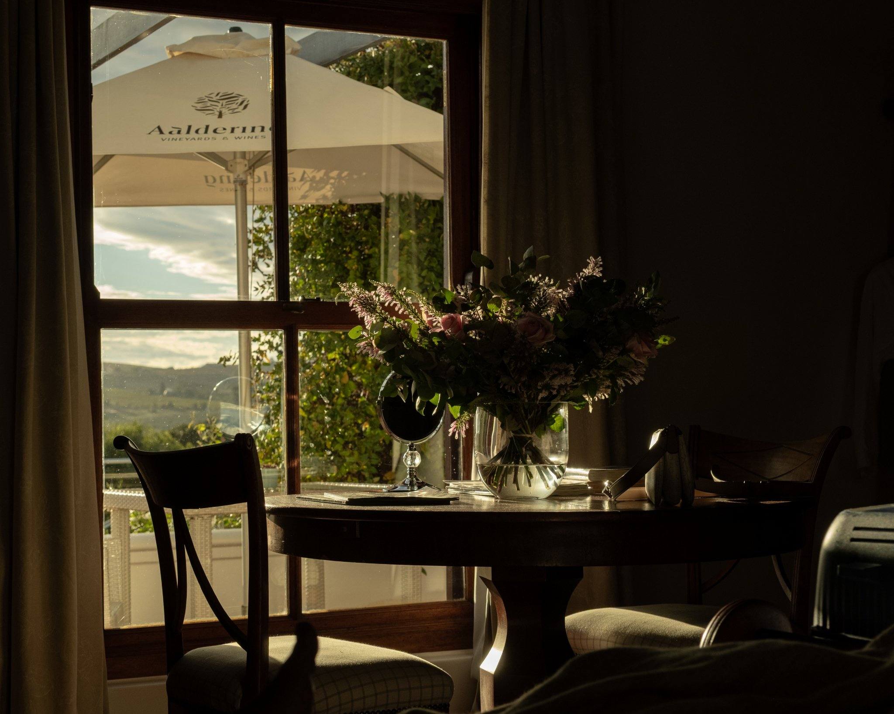

April 2026
Cape Town, South Africa
Atlantic wind, cliffs, open coastline and vineyards where small moments appear within vast landscapes.







Atlantic wind, cliffs, open coastline and vineyards where small moments appear within vast landscapes.






